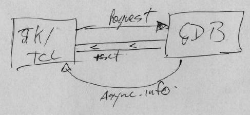

GDBtk Architecture
Thanks to Jim Blandy and Stan Shebs who might even recognize the occasional
sentence.
GDB's original textual command line interface was inseparable from the
GDB core code itself. Code that builds a response to a request is
distributed through out the GDB core. The responses often being interspersed
with both error messages and target responses. The code generating
the responses and their formatting are both arbitrary.
GDBtk was implemented by attaching to GDB using two separate mechanism:
firstly all text responses to commands were captured, and secondly by hooking
into specific GDB functions.

Text capture
Graphical user requests were mapped, by the GUI, onto a sequence of one
or more GDB commands. Each of these commands was then issued to GDB.
Any output from the command being captured by the GUI (see gdbtk_fputs()).
The GUI would then parse the command results (using pattern matching) and
extract significant data returned by the query.
It should be immediately clear that this method is both complex and
unreliable. Any changes to GDB's textual responses may result in
a need to update the corresponding GUI parsing code.
Hooks
Perhaps better described as source level patches.
In addition to the capture of textual output from the GDB, GDBtk found
it necessary to modify GDB so that the GUI was notified of certain internal
events when they occurred. Those events, in general, were to advise
the GUI that part of the GUI's internal state was no longer consistent
with that of GDB and those structures (or displays) should be updated.
A simple example of this would be the run command. Before
starting a target, GDB will check the executable being debugged to see
if it has been modified. If it has been modified GDB will re-load
any symbol information. For a GUI, such as GDBtk, that may in turn
require the GUI to re-build its state (the display, variable windows).
(see gdbtk_pre_add_symbol() and gdbtk_post_add_symbol()).
Problems and limitations
Thanks to Keith Seitz and Stan Shebs
Error Handling
-
All errors go to gdb_stdout, so they get interspersed with the output from
GDB commands.
-
Possible to get multiple error dialogs with GUI, since one GUI button could
translate into multiple CLI commands
Warnings
-
All warnings go to gdb_stdout, so we could again get warnings in the output
of normal GDB commands (e.g., protocol errors in variable window).
-
No priorities. Some warnings should interrupt the user ("Source file is
newer than executable"), but others are rather superfluous.
User Interface API
-
All information retrieval assumes a terminal on which to print output in
a user-friendly way (not at all in a convenient way for GUIs).
-
The output format of the GDB commands are not precisely defined. GDB's
human readable output can (and often does) change in response to user feedback.
-
There is very little control over the volume of output, which means that
a GUI will need to spend time sifting through a large volume of data to
find just the values it requires.
-
GDB may mix output from several sources, such as when "display" commands
are used and when a program issues output through GDB.
-
Many functions do too much work. Consider list_symtabs in symtab.c, which
handles the commands rbreak, info functions, info types, info methods,
and info variables. This one function was responsible for searching the
symbol table, printing information on the matches, and setting breakpoints.
-
Streams (like gdb_stdout) offer a possible answer to all the problems.
Unfortunately, too many places either don't use streams or ignore them.
-
Inconsistencies. Ex. print_command() and output_command() both output
the value of a variable yet there is no common functionality shared by
these two functions.
-
All target printing MUST go through gdb's *_(un)filtered functions. remote-rdi.c
was one of several targets which was not doing this: it was using fwrite
and fputc directly to stdout.
Errata
Please add arguments and notes on errors here.
{kind=link}